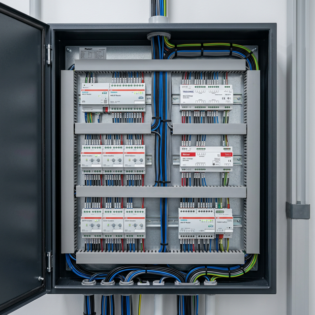
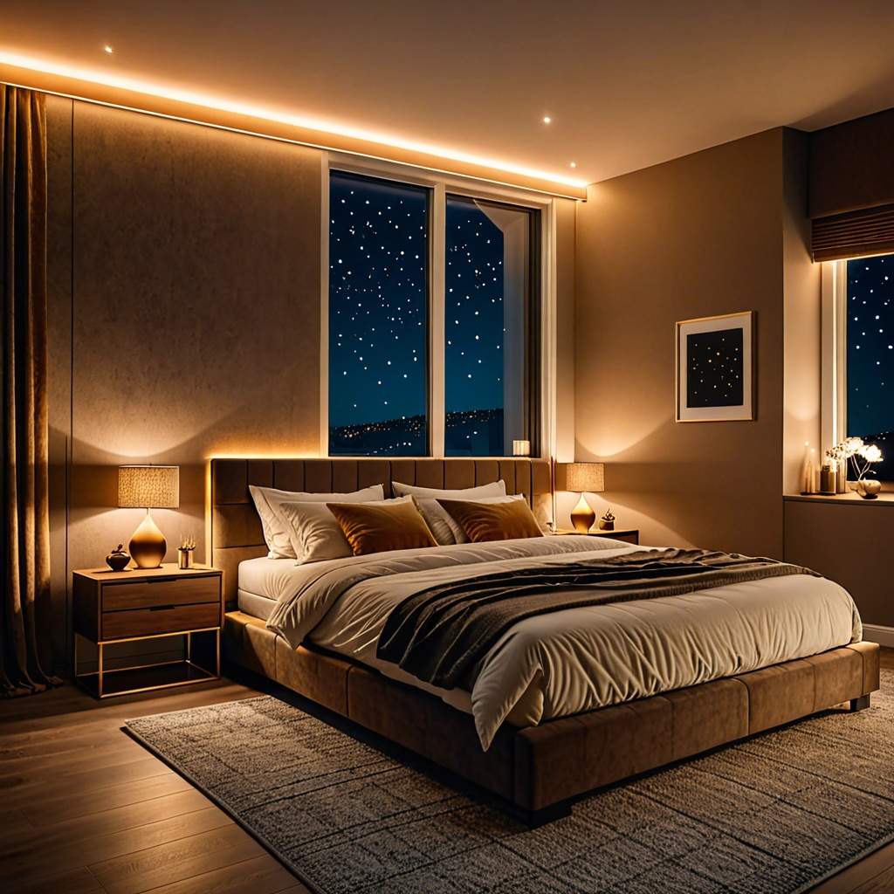
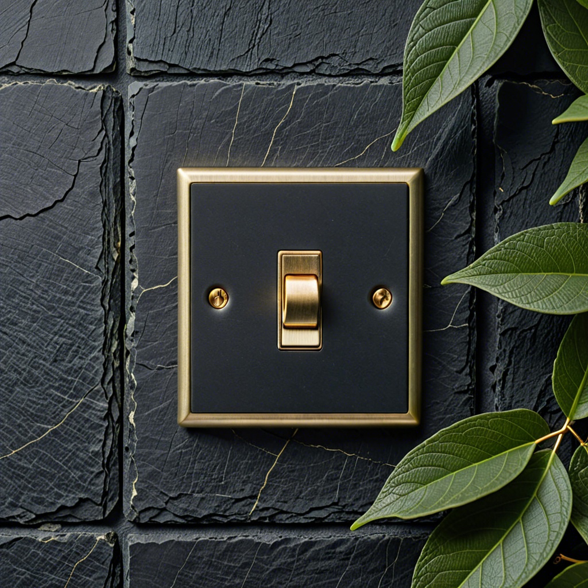

البثق الحراري
طباعة FDM عالية الأداء
نقوم بإنتاج مكونات ميكانيكية مستقرة وقطع غيار ونماذج أولية على آلات FDM الصناعية. بفضل الغرف الساخنة، يمكننا معالجة البوليمرات الصعبة بنجاح دون تشويه.
فئات المواد لدينا:
- اللدائن الهندسية: PETG, ABS, ASA (مقاوم للأشعة فوق البنفسجية) ، بولي كربونات نقي (PC).
- تكنولوجيا عالية ومركّبات: بوليمرات عالية الأداء معززة بالألياف مثل PPA-CF و PAHT-CF و PA-GF (الألياف الزجاجية) وكربون-نايلون للحصول على قوة ميكانيكية فائقة.
- بوليمرات متخصصة: لدائن مرنة (TPU) بدرجات صلابة مختلفة، ومواد مقاومة للهب وآمنة للكهرباء الساكنة.

الطباعة الحجرية المجسمة (SLA)
طباعة الراتنج SLA
للحصول على تفاصيل مجهرية و تصميمات ذات دقة عالية، تقدم تقنية SLA أسطحًا ناعمة تمامًا وخالية من الطبقات المرئية.
النماذج الأولية السريعة
التحقق من التصميم والملاءمة قبل صنع الأداة والقالب.

المعالجة اللاحقة
التنعيم والطلاء الكهربائي
لا يجب أن تبدو الطباعة ثلاثية الأبعاد مثل البلاستيك. نحن نقدم تنعيم البخار لغلق أجزاء FDM وجعلها مقاومة للماء مع لمعان عالي.
معدن على بلاستيك:
كفاءتنا الأساسية: نقوم بطلاء الأجزاء المطبوعة ثلاثية الأبعاد (ABS/Resin) في منشأة الطلاء الكهربائي الداخلية لدينا بمعادن حقيقية متنوعة. مثالي للنماذج الأولية أو التظليل أو القطع الفردية الحصرية.

تكامل النظام و حلول الأجهزة
من التصميم إلى التصنيع الصناعي.
المفهوم والهندسة المعمارية
تخطيط متعدد التخصصات
يتطلب النظام الذكي بنية تحتية قوية. نحن نصمم مسارات الأسلاك، ونخطط لمواضع أجهزة الاستشعار، ونُنشئ توثيقًا لمهندس الإلكترونيات الخاص بك.
تكامل النظام
منطق مستقل عن المورد
نحن نجمع بين أفضل الأجهزة الميدانية للتحكم في درجة الحرارة والإضاءة والروبوتات في كلٍ متكامل ونبرمج المنطق بمرونة تامة ليناسب متطلباتك.

دراسات الجدوى والحلول المخصصة
الأجهزة الذكية وإنترنت الأشياء
هل لديك فكرة عن منتج ذكي ولكن لا يمكنك العثور على أي شيء مناسب في السوق؟ نحن نطبق خبرتنا لإنشاء حلول أجهزة فردية.
من لوحة الدوائر إلى الغلاف:
سواء كانت عتبة باب ذكية متصلة بالكامل، أو أغلفة أجهزة استشعار مخصصة، أو أدوات IoT مستقلة: نتحقق من الجدوى الفنية، ونصمم الغلاف (CAD)، ونقوم بدمج الإلكترونيات في نموذج أولي وظيفي.

التصنيع وتوسيع النطاق
التصنيع باستخدام آلات CNC والإنتاج المتسلسل
تعتبر الطباعة ثلاثية الأبعاد مثالية للنماذج الأولية والقطع الفردية وسلاسل البلاستيك الصغيرة. بمجرد إثبات المفهوم، ننتقل بك بسلاسة إلى سلسلة التصنيع المعدني الصناعي.
الطحن والخراطة (معدن):
من خلال شبكة شركائنا الموثوقة، نحقق أجزاء CNC عالية الدقة من مختلف المعادن شديدة القوة. نقوم بتكييف بيانات التصميم الخاصة بك لعمليات تصنيع الآلات ونتولى إدارة الجودة الكاملة.
